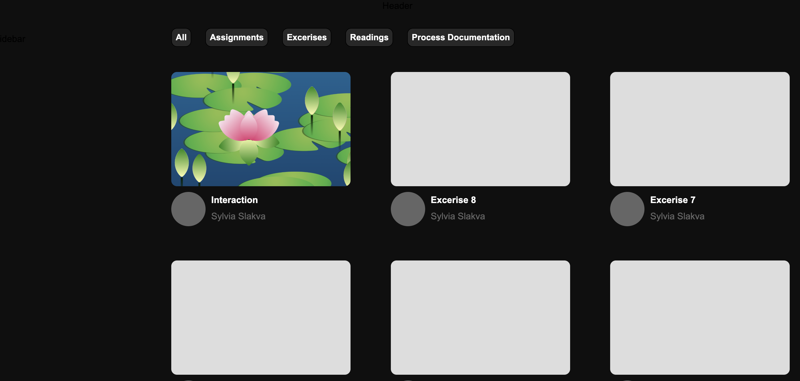

Introduction
For the final index, I wanted to mimic the youtube homepage! I often use youtube as background
noise while I'm doing homework. The platform organizes information in a variety of way which is what I
wanted to replicate.
Step 1: General Layout
The layout was the most difficult part of the process. I first analyzed the youtube website to get an
understanding of how they format their content. I first noticed that the header, side bar, and navigation
bar were fixed elements while scrolling. The navigation bar and content area were apart of a flex grid,
moving together when resizing the window. The side bar would minimize when reaching a certain threshold.
Trying to replicate this took a while. There was sometimes issues as having elements like the header or
general page as a flex box would cause conflict with the fixed element effect..
I also revisited the whole responsive design lesson during this process. Adding a margin couldn't provide an
easy fix for overlapping elements as resizing the window would inevitably create the same issue.
Step 2: Content Layout
Figuring out the layout for the videos was also an ordeal. I realized early on that I should use a flex grid
to create rows of boxes. These boxes would make up the assignments or "videos". This was easy enough to do -
but formatting smaller elements was the real challenge.
I essentially created nests of flex grids in order
to achieve the desired look. I used a container to stack the thumbnail and info container in a column. I
then used the info container to stack to the image and text container into a row. And then I used the text
container to stack the title and channel name into a column. I had to draw this out prior because of the
additional containers I had to create for this.
Once I got over this hurdle I started designing the appearance. At the time I was still trying to decide if I
wanted a randomized element to the homepage - in which the videos would appear in a random order. I
ultimately just added everything manually since it seemed like too much work. I also ensured everything had
the proper link when the user clicked on a specific video.

I wanted to add a hover effect in which hovering over the thumbnail would reveal a short video of the
highlighted assignment. I wanted it to mimic the way youtube autoplays when you hover over a video. I
initially kept all the videos pinks for this reason so hovering would reveal a screenshot of the assignment.
But I ended up changing it since having different thumbnails felt more like youtube than plain colors. I
changed it so a pink overlay would appear when hovering over a thumbnail.

Step 3: Sidebar
I wanted the sidebar to be the resource tab or the "Subscriptions" of my page.
After figuring out the formatting issues of the general page, this section was fairly easy. I created a list
of resources I used while creating this index. Within this list, I included icons and links to each
resource. When hovering over a resource, the background will change color.
I wanted to mimic youtube's effect of minimizing the sidebar will reisizing the window. I essentially
removed the text when the window got to small and left the icons as is.
Step 4: Search Bar
Youtube has a search bar at the top so it was inevitable that I would include this.
I had a bit of trouble using jquery for this part, so I used regular javascript. I essentially took the
search input and compared it to any text with the class title in it. If they matched, the title and it's
parent elements would be shown on screen.
Step 5: Navigation Bar
This was also a bit difficult. I created
a row of boxes that would serve as a filter. Each of these filters had a data-id, which would search for any
circles that had the matching class name. Using this example I applied the same logic. I created several
boxes and gave each of them a different name and data-id (ex. assignments, process, etc). I then went
through each box I had in the container full of videos. I assigned them their respective class names -
assignments, process etc. Using javascript, I displayed the elements that had the matching ids.
Step 5: Bell
Another notable thing I added was the bell. Youtube has a notifcation bell that alerts the subscriber of any
new videos. I thought it would be cute to animate a notification and display a new assignment. I added a
brief hover effect, a second long expanding animation, and click function. When the user clicks on the bell,
a display appears showing a new notification. It links to my last assignment - the lotus pond interaction.
There was a brief issue with the display order. The notification box would appear underneath the navigation
bar despite making the order higher.
Step 6: Other Details
There was a lot of other stuff I didn't cover but would like to mention! I used Font Awesome to add special
icons like the bell and magnifying glass. I also used photoshop to adjust the resource icons and create a
mix of my logo and youtube's.
I spent some time trying to track down the Youtube Sans font, but utimately settled for something
similar since the file format wasn't working. I also made a guest profile icon and made the search bar
responsive
to the window size.